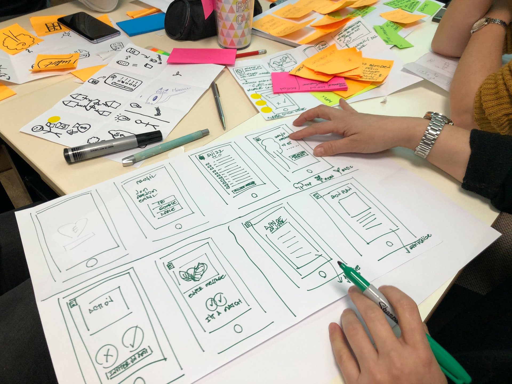

Sketching
Předtím než začneme s grafickým návrhem webových stránek nebo aplikace, tak musíme vědět co vůbec chceme navrhnout. Proto je dobré si na začátku jen tak načrtnout různé nápady, které nás napadnou. Tomuto procesu se říká sketching. Ne na každý projekt je sketchování potřeba a stačí nám třeba mít jen v hlavě jak něco uděláme. Ale u složitějších projektů kde ještě nevíme jakým způsobem něco zrealizujeme nám sketchování může pomoct.
Postup při sketchování
Sketchování je dvoufázový proces. V první fázi přicházíme s různými nápady bez zaměření na detaily, a v druhé fázi tyto nápady zlepšujeme nebo zahazujeme. Vypsal jsem tu ve třech částech jak při sketchování postupovat.
1. Příprava na sketchování
Předtím než vůbec začneme sketchovat, tak se na to musíme připravit. Samozřejmě musíme mít k dispozici tužku a papír nebo třeba grafický tablet, ale musíme také vědět jaké máme s navrhovaným produktem cíle, kdo je naše cílová skupina a tak dále. Co všechno je dobré před zahájením sketchování udělat jsem popsal v následujících bodech.
- Připravit si papír a tužku, grafický tablet, nebo tak něco (to je asi jasné).
- Určit si jaké máme s navrhovaným produktem cíle.
- Zjistit si jaká je naše cílová skupina (kdo bude náš produkt používat).
- Není špatné určit si časový limit, který sketchování věnujeme. Díky tomu se alespoň nebudeme soustředit příliš na detaily.
2. Generování nápadů
Prvním krokem při sketchování je generování nápadů. V této fázi se při načrtávání našich webových stránek vůbec nesoustředíme na žádné velké detaily. Namísto toho rychle přicházíme s nápady jak by jednotlivé stránky mohli vypadat a načrtáváme si je na papír. Můžeme načrtávat i více verzí jedné stránky ze kterých později vybereme tu nejlepší nebo je v druhé fázi sjednotíme dohromady.
3. Přidávání detailu a vylepšování
Druhým krokem při sketchování je vzít naše načrtnuté nápady a postupně do nich přidávat více detailu a vylepšovat je. Žádné velké detaily do nich přidávat nemusíme, od toho sketchování není. Měli bychom si ale být po dokončení druhé fáze sketchování o něco více vědomi toho, jak by naše webové stránky nebo aplikace měli vypadat. Tyto náčrty potom můžeme použít při wireframingu až budeme přesněji určovat jakou by naše webové stránky nebo aplikace měli mít strukturu a přidávat konkrétnější detaily.
Pár tipů pro sketchování
Na závěr bych tu chtěl vypsat pár tipů, které by vám mohli při sketchování pomoct.
- Je dobré přidávat ke svým sketchům názvy, abychom nezapomněli jakou stránku jsme to vlastně načrtávali.
- Není špatné opatřit své sketche poznámkami. Později bychom totiž mohli zapomenout co a jak jsme v našem náčrtu vlastně mysleli.
- Pokud pracujeme v týmu, tak vůbec není na škodu zeptat se svých kolegů co si o našich náčrtech myslí a jestli by něco udělali jinak.
- Není dobré nad sketchováním moc přemýšlet. Lepší je se do toho hned pustit.
- Je dobré mít svůj blok a tužku nebo grafický tablet po ruce, protože nikdy nevíme kdy nás něco napadne a budeme si to chtít načrtnout.
- Není potřeba snažit se aby naše sketche vypadali hezky. Jsou to jen náčrty.